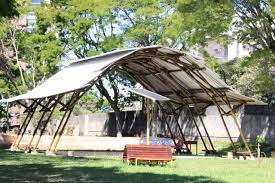

O projeto "Cultivando saberes: educação socioambiental para escolas sustentáveis" desenvolve uma série de ações relacionadas à questão da sustentabilidade socioambiental no Colégio Estadual Leôncio Correia (CELC), uma escola pública localizada em Curitiba (PR), a fim de promover a transformação da escola em um espaço educador sustentável
Seus objetivos são: construir uma escola sustentável que promova comportamentos e valores comprometidos com a sustentabilidade socioambiental em 4 dimensões: currículo, gestão, espaço físico e comunidade escolar; desenvolver e institucionalizar práticas pedagógicas interdisciplinares de ensino, pesquisa e extensão voltadas à questão socioambiental; transformar a escola em um centro de referência em sustentabilidade socioambiental, contribuindo para uma educação que não se limita aos muros da escola e formando uma geração de indivíduos comprometidos com a sustentabilidade socioambiental em todas as suas dimensões e complexidade
